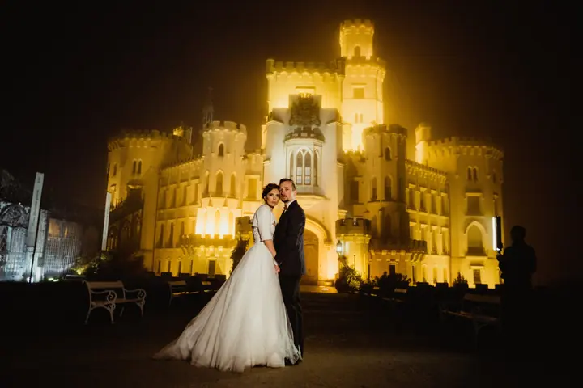
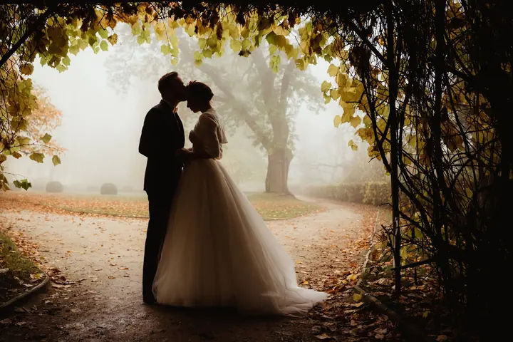
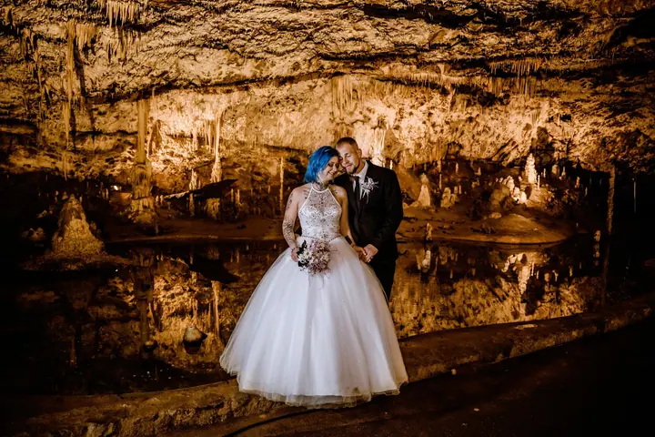
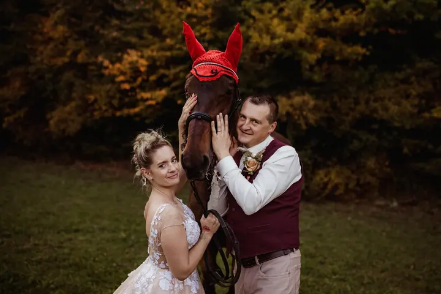

jedna
Svatební focení
Váš svatební den fotím reportážně a nenápadně, od nervózních příprav až po večerní zábavu. Hlídám si detaily i velké momenty a ráda přidám i stylizované portréty.

Svatební a rodinná fotografka · Brno, Veverské Knínice, okolí Brna

Jmenuji se Marie Stránská a jsem svatební a rodinná fotografka z Brna. Svatby fotím reportážně a nenápadně, aby na fotkách zůstala skutečná atmosféra vašeho dne. Ve svém ateliéru u Brna se pak věnuji miminkům, maminkám v očekávání i celým rodinám.
Více o mně
Co fotím
jedna
Váš svatební den fotím reportážně a nenápadně, od nervózních příprav až po večerní zábavu. Hlídám si detaily i velké momenty a ráda přidám i stylizované portréty.
Aranžované nebo lifestyle focení novorozenců v klidném tempu. Bezpečí a pohodlí miminka jsou pro mě vždy na prvním místě.
Jemné ženské fotografie z jedinečného období, samostatně, s partnerem i s dětmi. V ateliéru, v přírodě při západu slunce nebo kombinovaně.
Přirozené fotografie dětí, sourozenců i celé rodiny v ateliéru nebo venku. Žádné strnulé pózy, hlavně smích, objetí a skutečné okamžiky.
Vzpomínky, ke kterým se budete rádi vracet.

Za objektivem
Svatbám se věnuji zhruba patnáct let. Mám ráda reportážní styl, kdy jsem spíš nenápadným pozorovatelem a nechávám den plynout po svém. Nevyhýbám se ale ani stylizovaným portrétům, na které si během dne najdeme chvilku jen pro vás dva.
Od roku 2014 fotografuji také miminka a za tu dobu jsem měla tu čest fotit stovky novorozenců. Jako maminka vím, jak rychle první dny utečou. Proto pracuji pomalu, trpělivě a vždy v tempu miminka. Spolu s těhotenským focením je to moje hlavní specializace.
Fotím ve svém útulném ateliéru ve Veverských Knínicích u Brna, venku v přírodě nebo po domluvě i u vás doma. V ateliéru mám velký výběr šatů k zapůjčení a každý rok tu chystám vánoční scénu. Hlavně mi ale jde o to, abyste se u focení cítili klidně a dobře.
Marie
Dejte mi vědět, o jaký typ focení máte zájem, a společně domluvíme termín i všechny podrobnosti. U newborn focení je ideální ozvat se ještě před porodem.
Probereme vaši představu, styl a místo focení. Poradím s oblečením a u těhotenského focení si můžete vybrat z mých šatů.
Nemusíte mít žádné zkušenosti před objektivem, s pózami vám poradím. Na svatbě se pohybuji nenápadně a nechávám den plynout přirozeně.
Po focení dostanete odkaz do online galerie s náhledy. Vyberete si fotografie, které pečlivě a přirozeně upravím do finální podoby.
Portfolio
Otázky
V mém ateliéru ve Veverských Knínicích u Brna, v exteriéru nebo po domluvě u vás doma. Záleží na typu focení a vaší představě. Newborn focení u vás doma je za příplatek 1 000 Kč.
Přibližně do 14 dnů po porodu, kdy miminka nejvíc spí. Termín doporučuji rezervovat ještě před porodem. Pokud se rozhodnete později, nevadí, miminka zvládám fotit i do dvou měsíců věku.
Ideální je období mezi 28. a 35. týdnem těhotenství. Bříško je už krásně vidět a focení je pro vás ještě pohodlné.
Po focení vám pošlu odkaz do online galerie s náhledy. Z nich si v klidu vyberete fotografie, které chcete upravit a dodat ve finální podobě.
Napište pár vět o tom, co si představujete. · +420 734 789 774